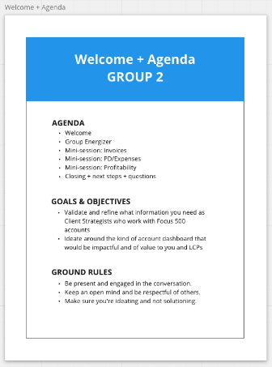
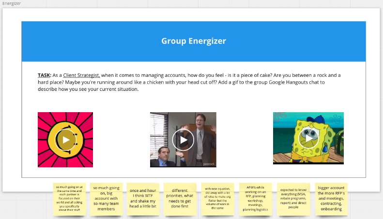
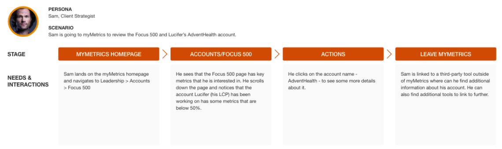
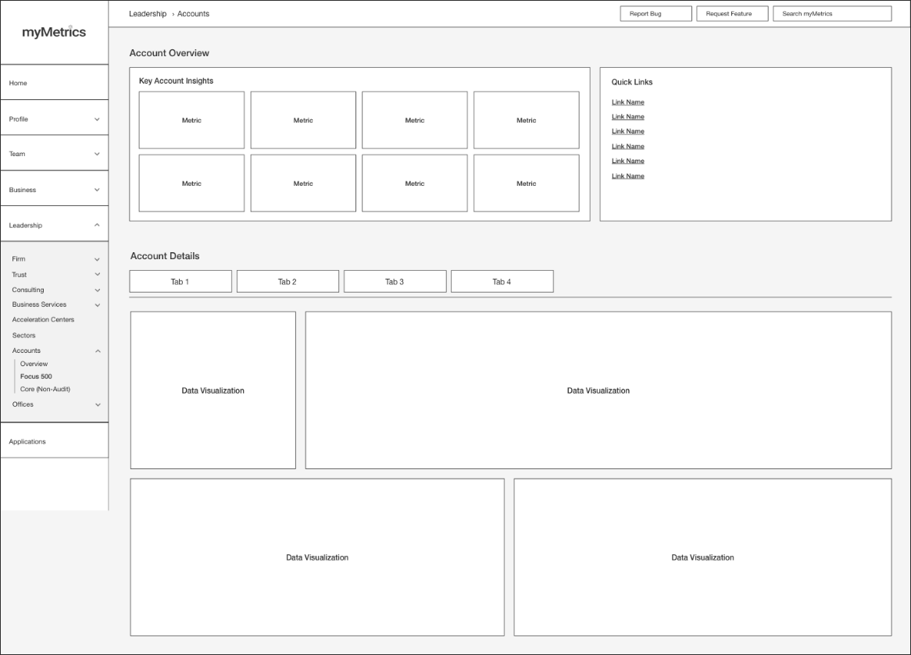
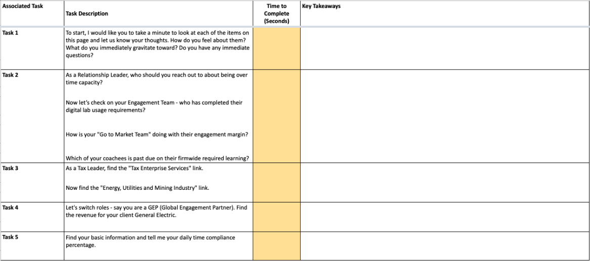
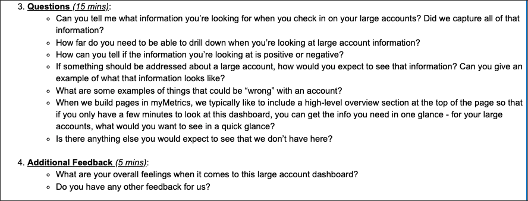
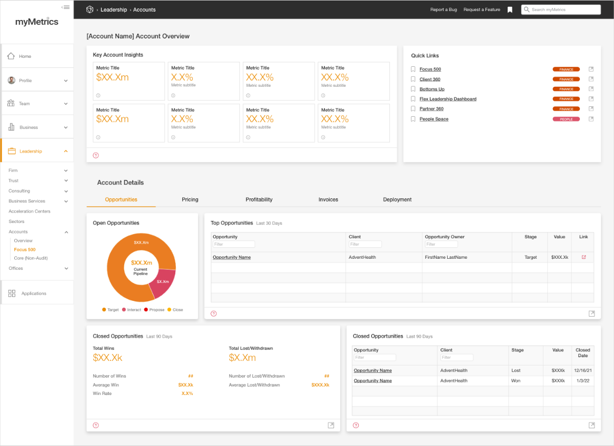

The Problem
Account performance information was spread across overlapping data sources and older reporting tools. Partners and their support teams lacked a single place to find the metrics they needed for large, global accounts. The design challenge was to bring that information together in a way that supported their day-to-day work.
Understanding What Account Teams Needed
Our team conducted Voice of the Customer sessions and individual interviews with 50+ participants, including PwC Partners, Client Strategists, and leadership support staff. Interviewees described how many different places they had to go to find the information they needed. They wanted a “one-stop shop” for their metrics that was easy to navigate.
That finding gave the dashboard a clear direction: bring account metrics together in one place and make navigation a central design priority. We explored which metrics mattered to users and how they used them, and documented their workflows through personas and journey maps.



I used that need for a “one-stop shop” to guide my dashboard wireframes, exploring how to organize account metrics in a single interface that users could navigate easily.

Testing & Iteration
We brought the designs back to the original research participants for 30-minute, individual usability sessions. Participants completed a set of tasks to find information in the dashboard while we observed without guiding them. Follow-up questions helped us understand what felt useful or confusing, and we used their feedback to iterate on the designs.


The Final Dashboard
The final dashboard brought key account metrics into one interface, giving Partners and their support staff a consolidated view of account performance. The design addressed the central need identified in research: access to detailed information for their largest accounts in one place.
